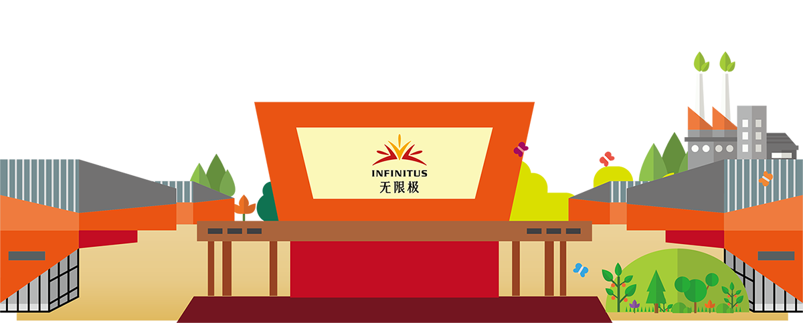
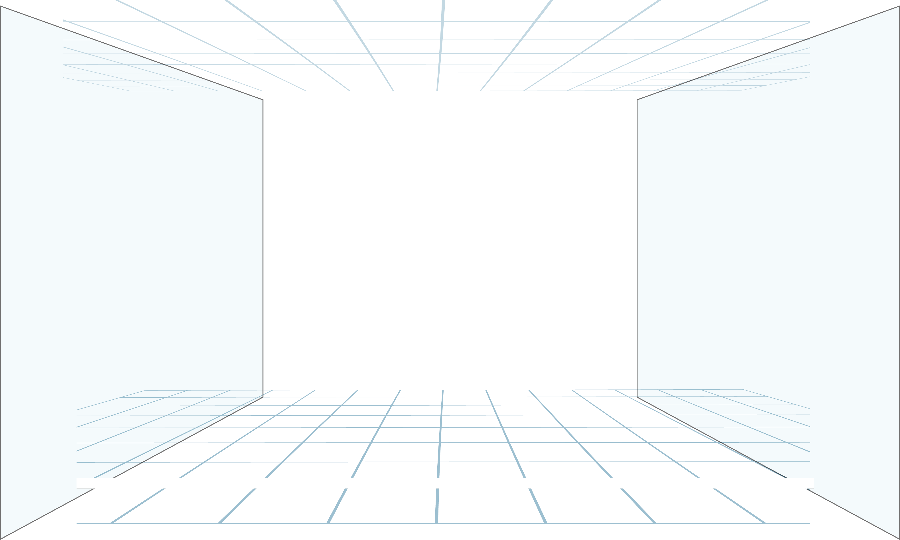
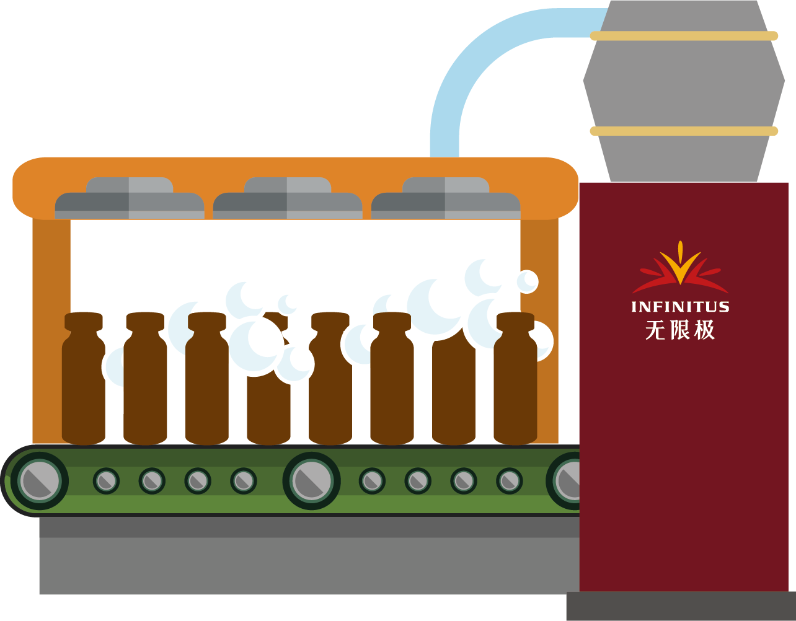
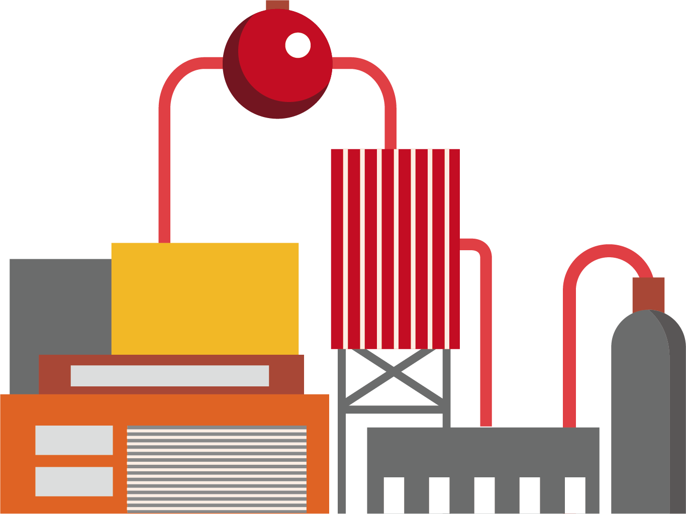
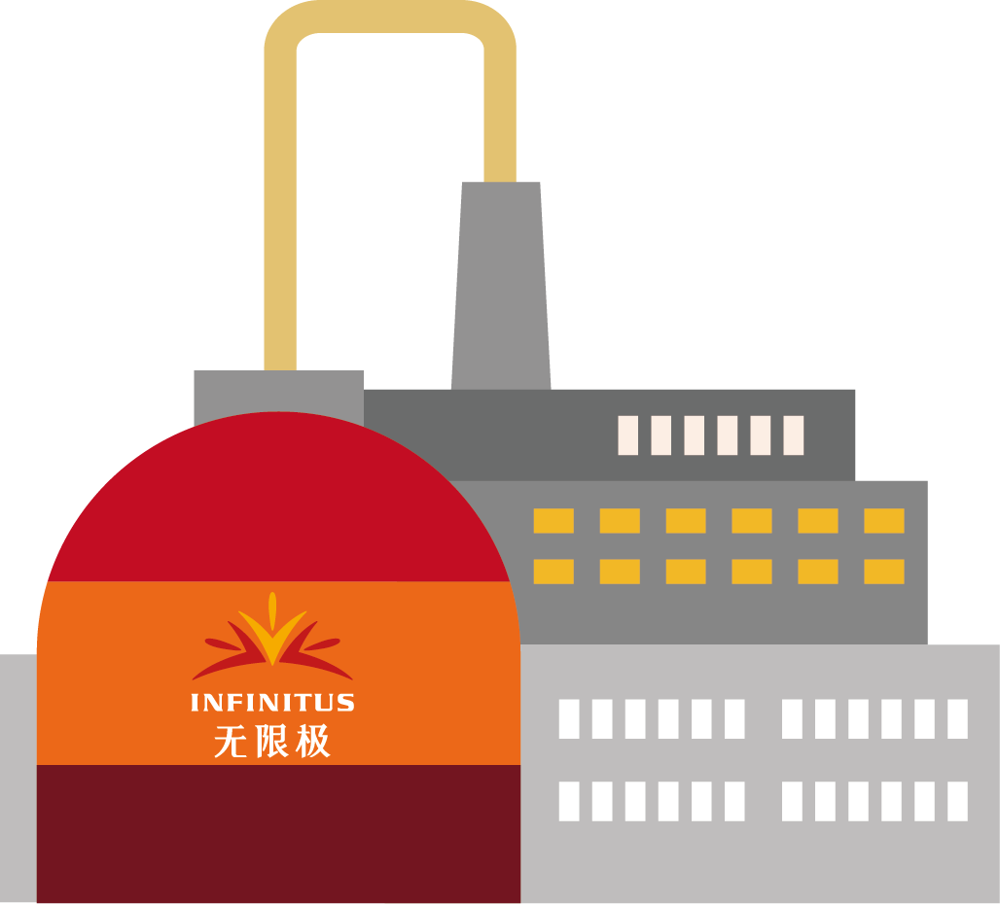
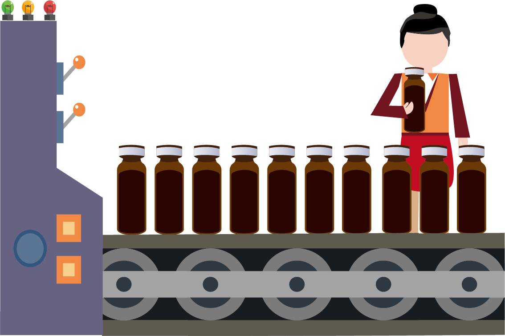
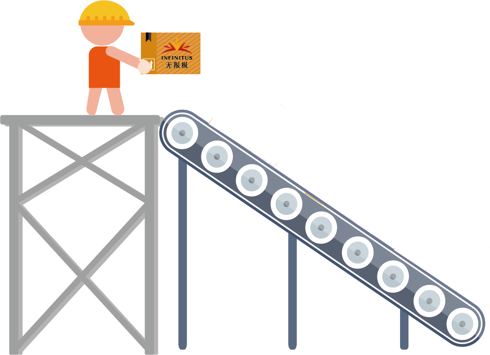
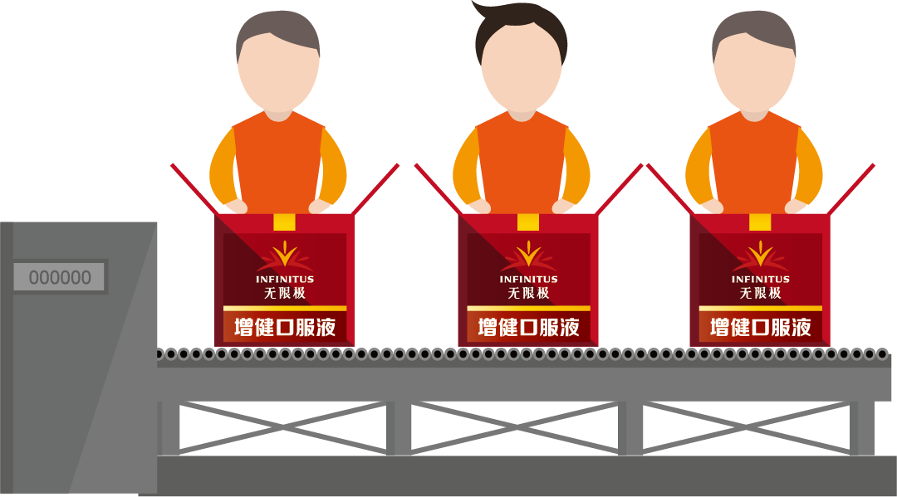
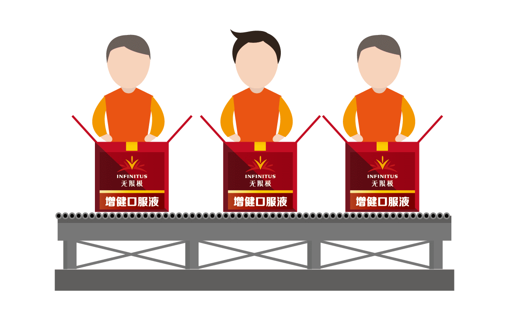
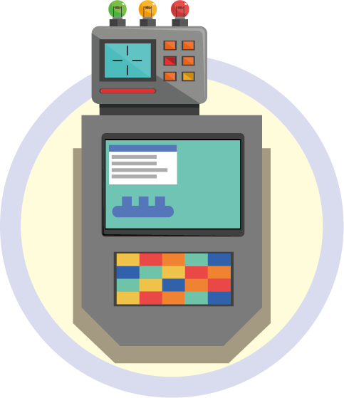

鼠标移到这里试试

 √ 1998年10月，荣获中国保护消费者基金会推荐产品证书，口碑正式建立；
√ 1998年10月，荣获中国保护消费者基金会推荐产品证书，口碑正式建立；√ 2001年10月，首次荣获“十佳保健品”称号，开始走向荣誉巅峰；
√ 2003年7月，获“2002年全国保健食品百强畅销产品”称号，成为保健食品界的“名流”；
√ 2006年5月，被评为“中国保健品公信力产品”，良好的口碑成为其继续创造辉煌的原动力；
√ 2007年6月，被认定为“广东省高新技术产品”，标志着它成为保健品中的佼佼者；
√ 2016年5月，成为质量界“奥斯卡”蒙特奖首款中草药健康产品，惊艳全球；" data-ot-delay="0">
点击鼠标试试




8.杀菌
2.提取
1.投料
3.浓缩
4.配制
5.洗瓶
6.烘干
7.灌装

点击鼠标试试





1.自动灯检
2.抽样质检
3.贴标
4.自动化包装